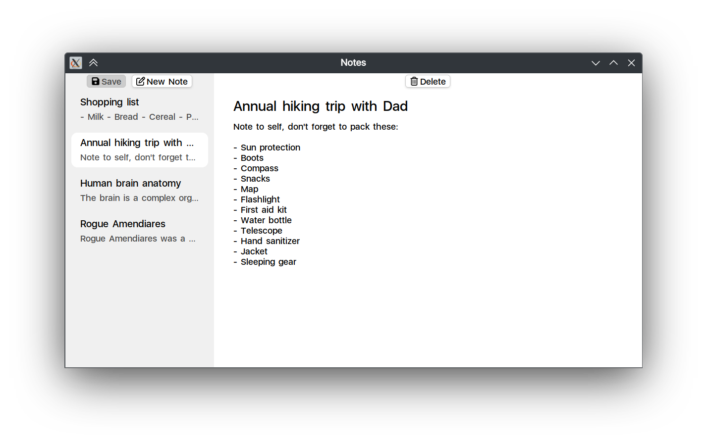

- Note
- This page describes an example listed in Application Examples.
- Note taking app that demonstrates usage of AListModel, AProperty, user data saving and loading.

The functionality includes loading, saving, creating and deleting notes, as well as marking the UI state as dirty when changes are made.
Models#
Note struct describes a note:
struct Note {
};
Basic easy-to-use property implementation containing T.
Definition AProperty.h:30
The JSON representation is described as follows:
AJSON_FIELDS(Note, AJSON_FIELDS_ENTRY(title) AJSON_FIELDS_ENTRY(content))
MainWindow class#
The MainWindow class is responsible for managing the overall view and logic related to notes.
Fields#
mNotes: a member that holds a list of notes.mCurrentNote: a property holding a pointer to the currently selected note.mDirty: a boolean property indicating whether there are unsaved changes in the application.
Methods#
load(): loads notes from a JSON file. void load() {
try {
if (!"notes.json"_path.isRegularFileExists()) {
return;
}
aui::from_json(AJson::fromStream(AFileInputStream("notes.json")), mNotes);
} catch (const AException& e) {
ALogger::info(LOG_TAG) << "Can't load notes: " << e;
}
}
save(): saves the current list of notes to a JSON file. Also resets the dirty state. void save() {
AFileOutputStream("notes.json") << aui::to_json(*mNotes);
mDirty = false;
}
newNote(): creates a new note with a default title and adds it to the list of notes. Sets this note as the currently selected note. void newNote() {
mNotes.writeScope()->push_back(note);
mCurrentNote = std::move(note);
}
deleteCurrentNote(): deletes the current note, if one is selected. Prompts the user for confirmation before proceeding with deletion. void deleteCurrentNote() {
if (mCurrentNote == nullptr) {
return;
}
this, "Do you really want to delete this note?",
return;
}
auto it = ranges::find(*mNotes, *mCurrentNote);
it = mNotes.writeScope()->erase(it);
mCurrentNote = it != mNotes->end() ? *it : nullptr;
}
markDirty(): marks the application state as dirty when changes made that require saving. Such a simple operation is extracted to a dedicated method, so the signals can be easily connected to. void markDirty() {
mDirty = true;
}
UI Components and Layout#
TitleTextArea: derivative of ATextArea that focuses next text area when Enter is pressed.
public:
using ATextArea::ATextArea;
void onCharEntered(char16_t c) override {
if (c == '\r') {
return;
}
ATextArea::onCharEntered(c);
}
};
Multiline text input area.
Definition ATextArea.h:48
static AWindowBase * current()
- 'New note' button: creates a new note using
newNote().
- 'Save' button: saves application data via
save() method. It's enabled state is controlled by mDirty property.
- 'Delete' button: deletes current note via
deleteCurrentNote() method. It's enabled state is controlled by mCurrentNote property.
- Previews: contains dynamically generated previews of all notes, allowing users to select the one they want to view or edit.
AScrollArea::Builder()
.withContents(
observeChangesForDirty(note);
return notePreview(note)
let {
connect(it->clicked, [
this, note] { mCurrentNote = note; });
it& mCurrentNote > [note](AView& view, const _<Note>& currentNote) {
ALOG_DEBUG(LOG_TAG) << "currentNote == note " << currentNote << " == " << note;
view.setAssName(".plain_bg", currentNote == note);
};
};
})
.build(),
notePreview() function generates a single preview for a note.
struct StringOneLinePreview {
AString operator()(const AString& s) const {
if (s.empty()) {
return "Empty";
}
return s.restrictLength(100, "").replacedAll('\n', ' ');
}
};
return Vertical {
note->title.readProjected(StringOneLinePreview {}),
ATextOverflow::ELLIPSIS,
} &
note->content.readProjected(StringOneLinePreview {}),
};
}
- Main area of the application is occupied by note editor generated by
noteEditor() function. noteEditor() consists of 2 text areas - one for title, one for contents.
if (note == nullptr) {
return Centered {
Label {
"No note selected" } };
}
Vertical {
_new<TitleTextArea>(
"Untitled")
let {
if (note->content->empty()) {
it->focus();
}
},
});
}
Source Files#